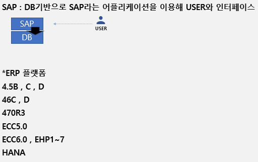

20220905 - SAP Application
SAP application

SAP communication

SAP platform
SAP는 넷위버(SAP 기술기반, 즉, 플랫폼) 기반 위에 ERP, EP, CRM, SRM을 올려운영
- ERP: 전사적 자원 관리 시스템, Enterprise Resource Planning
- CRM: 고객 관계 관리 시스템, Customer Relationship Management
- SRM: 공급자 관계 관리 시스템, Supplier Relationship Management
- PLM: 제품 수명 주기 관리 시스템, Product Lifecycle Management
SAP structure

SAP work process
Work process - 서버에서 동작하는 작업의 종류
- Dialog - 사용자의 요청에 의해 dialog 스텝을 수행한다
- 쉽게 말해, ABAP의 구문이 한줄한줄 씩 순차적으로 진행되는 것
- Update - DB 업데이트를 수행
- Background - 사용자와의 상호작용 없이 프로그램을 수행
- Enqueue - Rock 관리
- Spool - 순차적인 데이터 흐름을 프린터에 전달
SAP landscape
SAP의 시스템 구상도는 보통 3 tier로 구성되어 있으며, 개발DEV-품질QAS-운영PRD 시스템이 물리적으로 구성
- 개발 - ABAP 개발 + 각 모듈의 customizing 변경 생성
- 품질 - 개발에서 변경한 내용을 CTS를 통해 반영
- 운영하고 최댛나 똑같이 환경을 맞춰 프로세스를 돌려 테스트 가능하도록
- 운영 - 품질 시스템에서 테스트를 완전히 거친 뒤 반영 or 시트템 내 트랜잭션을 일으켜 데이터 생성
SAP TMS
TMS (Transport Management System) - 전송관리시스템
SAP의 변경은 개발 시스템에서만 발생해야 하므로 개발 후, 변경사항 (CR)을 품질 및 운영 시스템으로 전송하기 위해 TMS를 통해 이관
- TMS - CTS를 하기 위한 툴
- CTS (Change and Transport System) - 전송/이관하는 행위 및 대상
- customizing request - img or configuration
- workbench request - ABAP 개발
SAP STMS

SAP transport organizer

SAP client


Client specific customizing or 종속적인 데이터
- 특정 클라이언트에서만 정의하고 영향을 받음 (즉, 해당 클라이언트에서만 볼 수 있음)
client specific customizing
- 우리 회사에 맞게끔 비즈니스 룰을 만드는 것
- ex. 플랜트 코드, 회사 코드…
application data
- 송장, 전표, 구매오더, 판매오더 등으로 우리회사의 프로세스를 보여주는 데이터
User data
- 특정 클라이언트의 user 집합체

Cross client customizing or 비종속적인 데이터
- 전체 클라이언트에서만 정의하고 영향을 받음
Repository object - DB 데이터
- 테이블 구조, ABAP 프로그램, function module